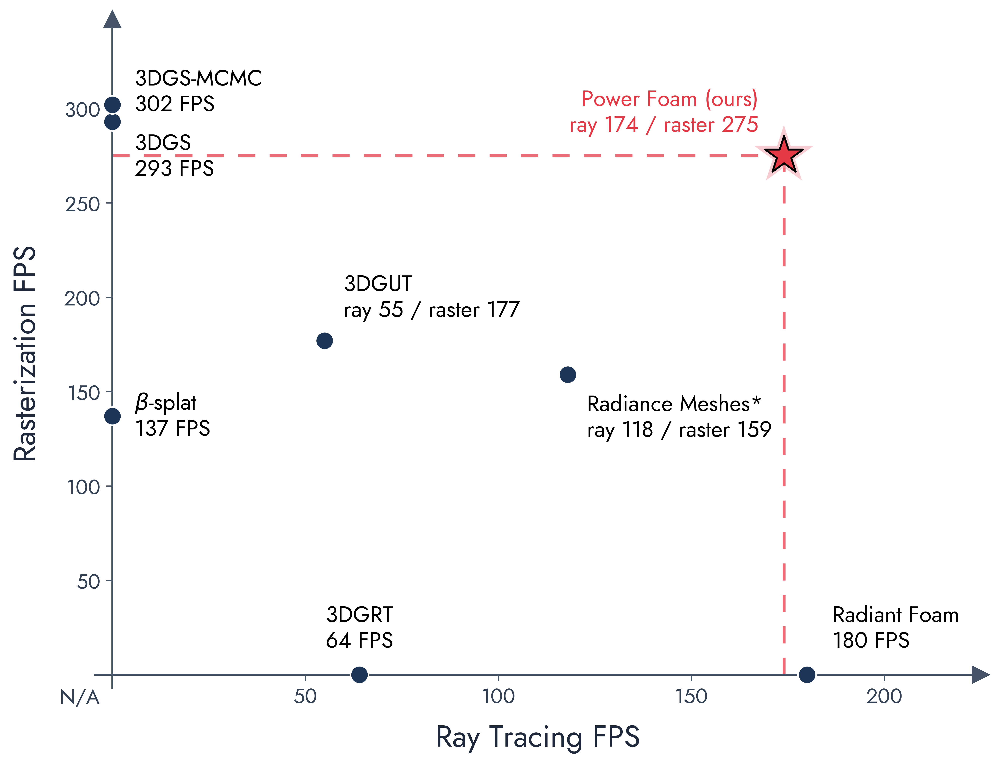

We introduce a differentiable 3D representation that unifies the ray tracing capabilities of foam-based ray tracing with the efficiency of modern rasterization pipelines. While prior foam representations enable constant-time ray traversal through an explicit volumetric partition of space, their potentially unbounded cells hinder efficient tile-based rasterization. We address this limitation by generalizing Voronoi foams to bounded power diagrams with controllable cell extents, enabling spatially bounded primitives without requiring expensive Delaunay triangulations during training. We further introduce an oriented surface formulation that explicitly models interfaces between interior and exterior regions, and decouple geometry from appearance by embedding differentiable texture directly on these surfaces. Together, these contributions yield a representation that preserves state-of-the-art ray tracing efficiency while achieving rasterization performance competitive with current generation 3DGS, providing a practical path toward unified real-time differentiable rendering.
Our goal is to construct a representation that can be both rasterized and ray traced, but while foam structures are natively amenable to ray tracing, efficient rasterization requires bounded primitives that an unbounded foam lacks. Without such bounds, testing a cell's intersection with image tiles demands an unwieldy projected convex hull in screen space and often spans large regions where the cell is fully occluded. The simplest remedy is to restrict each Voronoi foam cell to its intersection with a rasterization-friendly bounding primitive such as a sphere — a structure already provided by computational geometry as the weighted α-complex, or more specifically its dual, which we refer to as the bounded power diagram. As illustrated below, the Voronoi diagram (left) builds cell faces from planes equidistant to the cell sites and the power diagram (center) builds them from per-cell radii; using those radii as bounding spheres (right) then ensures that all cell boundaries have gradients with respect to every cell parameter.
Ray traversal additionally requires an adjacency graph between neighbouring cells: Radiant Foam obtained this from the Delaunay triangulation of its sites (left), and an unbounded power diagram would analogously require a regular triangulation (center). The bounded power diagram, in contrast, needs only its α-complex (right, blue), which drops edges between non-overlapping spheres and is therefore cheaper to build. We can simplify construction even further by replacing it with the Čech complex — the graph of all pairwise-overlapping spheres — which is a strict superset of the α-complex (right, blue + green). This approximation costs only a small amount of rendering speed while leaving the final output exactly correct.
Finally, for our decoupled geometry and appearance framework, the dipole face acts as a proxy for macro-scale geometry, while detail sites \( s_i \) are optimized to capture high-frequency geometric and appearance details without increasing the primitive count. As illustrated below by zooming into a leaf-tip cell of the Garden scene, displacement values \( d_i \) associated with each detail site push the surface up or down locally along the axis of the dipole, and our soft Voronoi formulation distributes both these displacements and the directional radiance \( c_i \) of each detail site across the dipole plane (shown side, top-down, and with displacement, left to right).
Power Foam is the only method that simultaneously matches the rasterization FPS of the corresponding state-of-the-art rasterizer (3DGS-MCMC) and the ray tracing FPS of the corresponding state-of-the-art ray tracer (Radiant Foam).

Our method achieves rendering quality comparable to 3DGUT and better than Radiant Foam. Specifically, we match the rasterization speed of 3DGUT while delivering superior ray tracing performance, and we achieve parity with Radiant Foam in ray tracing efficiency. For each scene, we display the ray tracing and rasterization frame rates (reported in that order) as an overlay in the top-right corner of the rendering.
We demonstrate Power Foam's ability to render fisheye images with both ray tracing and rasterization. Our pop-free sorting and exact volume rendering enable artifact-free fisheye rasterization — a regime where conventional rasterization-based methods typically fail.
Our representation retains the ray tracing capabilities of Radiant Foam and can hence be used to model complex light-transport phenomena.
@article{govindarajan2026powerfoam,
title = {Power Foam: Unifying Real-Time Differentiable Ray Tracing and Rasterization},
author = {Govindarajan, Shrisudhan and Rebain, Daniel and Verbin, Dor and
Yi, Kwang Moo and Prabhu, Anish and Tagliasacchi, Andrea},
journal = {arXiv},
year = {2026},
}